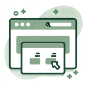
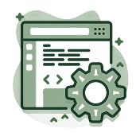
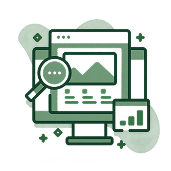

Páginas web
Creamos sitios visualmente atractivos y alineados con la identidad de cada marca, cuidando estructura, jerarquía y experiencia de usuario.
Emprendedores · Negocios · ProfesionalesTu sitio web debe hacer más que verse bien. Lo construimos para comunicar, funcionar y acompañar el crecimiento de tu negocio.
¡Comencemos!Herramientas con propósito
Cada proyecto requiere herramientas diferentes. Elegimos tecnologías de acuerdo con sus necesidades de diseño, funcionamiento, rendimiento y crecimiento, buscando siempre un equilibrio entre una buena experiencia de usuario, estabilidad, velocidad y posibilidades de evolución a futuro.
Soluciones a tu medida
Creamos sitios visualmente atractivos y alineados con la identidad de cada marca, cuidando estructura, jerarquía y experiencia de usuario.
Emprendedores · Negocios · Profesionales
Diseñamos espacios digitales para mostrar proyectos, trabajos, experiencia y capacidades de una marca o profesional.
Creativos · Freelancers · Agencias
Actualizamos páginas existentes para mejorar su apariencia, estructura, experiencia de usuario y adaptación a dispositivos actuales.
Marcas establecidas · Negocios en renovación
Desarrollamos sitios profesionales para presentar tu empresa, servicios, equipo, proyectos y medios de contacto de forma clara y atractiva.
Empresas · Despachos · OrganizacionesAntes de comenzar
Permite presentar tus servicios de forma clara, fortalecer la confianza en tu negocio y contar con un espacio propio donde tus clientes puedan conocerte y contactarte.
El tiempo depende del alcance, la cantidad de secciones, las funciones y el contenido disponible. Antes de comenzar definimos un calendario con etapas, revisiones y una fecha estimada de entrega.
Sí. Construimos una base técnica preparada para buscadores y configuramos los elementos esenciales de SEO. La posición final depende también de la competencia, el contenido y el trabajo continuo de posicionamiento.
Sí. Podemos analizar tu sitio actual y renovar su diseño, estructura y experiencia de usuario para adaptarlo mejor a las necesidades de tu negocio.
Necesitamos conocer tu negocio, los servicios que ofreces, tus objetivos y el contenido disponible. Con esa información definimos la estructura y el enfoque del sitio.